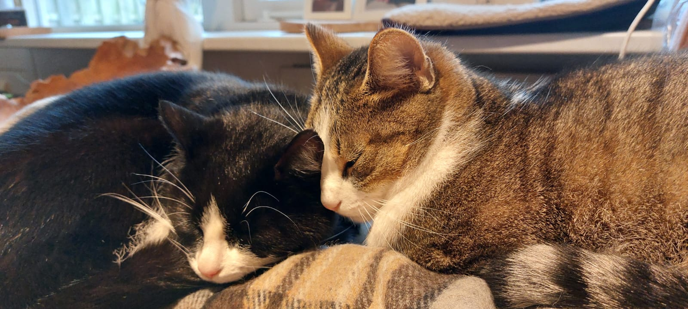
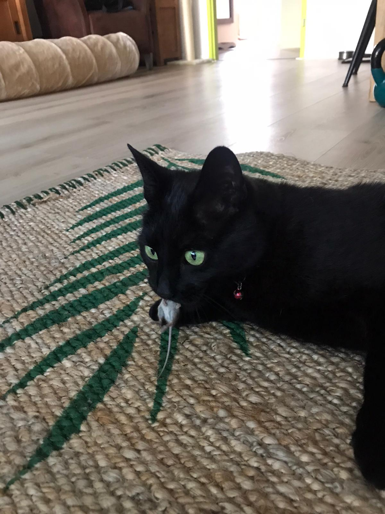
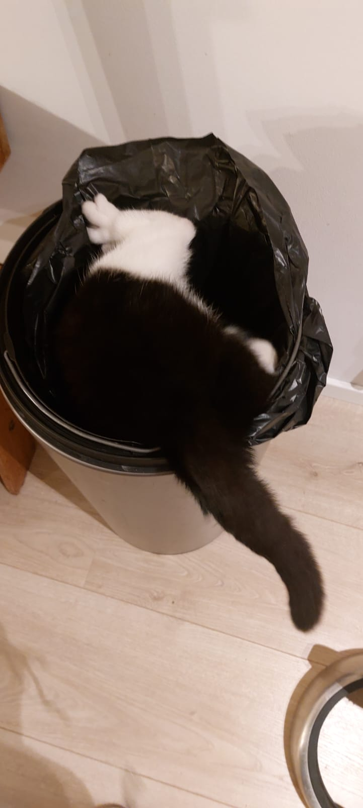

Welkom bij Tuin Muisvrij

Met mijn helpers zorgen we ervoor dat de muis uit de tuin je huis in komt
Over ons
-
Zorro

Lees meer over de Opperbaas...
De Master
Zorro: de opperbaas en de efficiënte opvanger. Het grote voorbeeld en de zwarte panter die leefde voor de nacht en jacht. Hij pakte ze, liet ze niet meer los en at alles netjes schoon op. Geen documentaire van David Attenborough voor nodig, de actie op 30 cm van je af. En nu is de hemel zijn jachtplek.
-
Valina

Lees meer over de diender...
De Dienaar
Van 6 uur tot ...ook weer 6. Ruimt de muisjes op, geeft ze voer, schept de poep op en blijft zo bezig. Ondanks alle intervisies en getoonde voorbeelden van de Master willen de kwartjes niet vallen.
-
Mickey

Lees meer...
De Hyperdepieper
Mickey is supergevoelig en rent bij drukte als een kip zonder kop rond. Hij kijkt naar de muis en weet eigenlijk niet wat hij ermee moet doen. Inmiddels heeft hij het redelijk afgeleerd om iets mee te nemen, dus dat is makkelijk opruimen. Zijn focus is op zijn huisgenootje Meis. Met irritatie, verwondering en verwarring leeft hij samen met ons. -
Meis

Lees meer...
De Ander Planeter
Meis eet alles wat vast en los zit. Ze brengt graag cadeautjes mee, maar laat ze vaak los en raakt ze soms ook kwijt. Zodat de bediende achter de muisjes aan mag gaan om ze weer vrij te laten. Een halfbakken jager, maar wel vol trots brengt ze haar buit onder het bed van haar bediende voor het makkelijke opruimen. Haar grootste succes: een dode rat onder het bed.
Wat wij doen
-
Muis levend
Is het wat stil in huis? Met Meis krijg je snel genoeg een muisje erbij voor de gezelligheid. Het creert leven in huis en het is zelden saai.
-
Muis dood
Tsja meestal kunnen we je hierbij niet helpen. De muis komt in het huis, maar je zult de muis zelf moeten terug zetten of soms opruimen. Erg goed voor de cardio en als bezigheidstherapie.
-
Muis on the run
M&M verliezen snel hun aandacht en laten dan hun muisje los. Dus verveel je je? Ze geven je wat te doen en daardoor vindt je plekken in huis die je vergeten was en je meteen kunt schoonmaken. You are welcome!
Wat je zelf allemaal kunt doen
Blog
Hier wil ik twee stukken. Inspiratie alla een blog en dan doorbladeren
Video's
Waar je video's kunt zien en dat die afspelen in de website